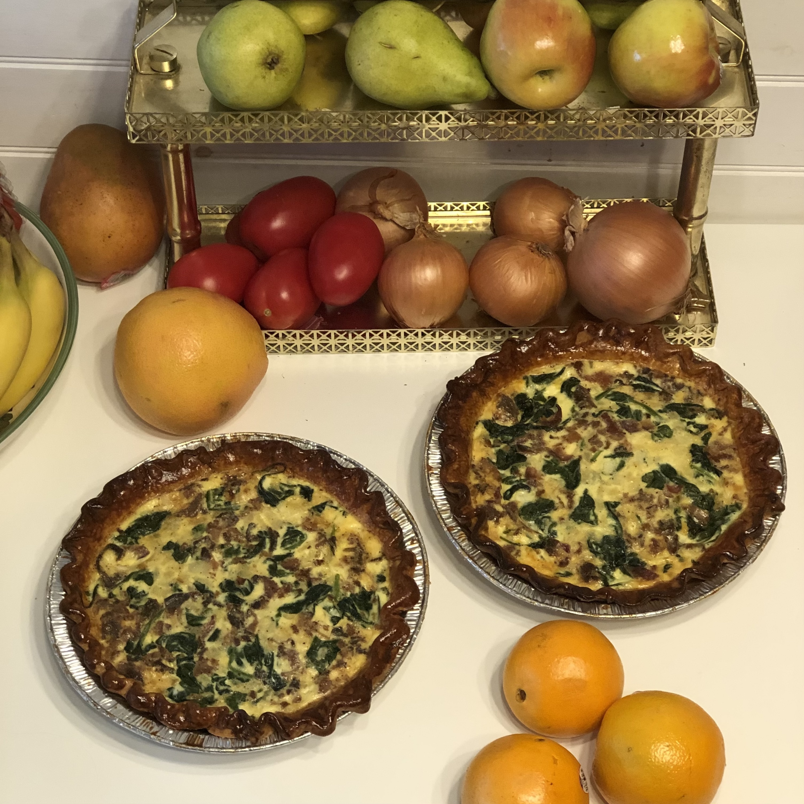
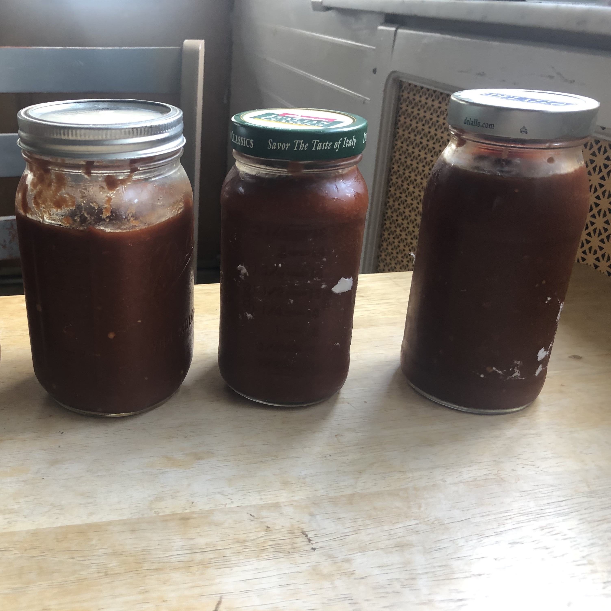
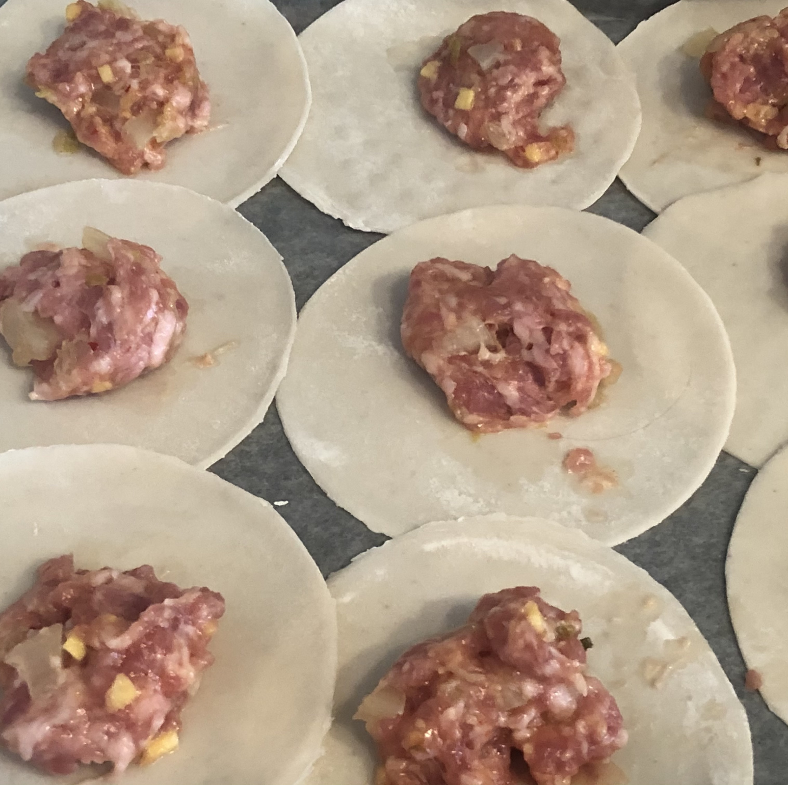

Pandemic Platter
During times of isolation and quarantine, I've had food to keep me company.
Below are some dishes I had fun cooking and eating during the pandemic.
Breakfast
I don't have pancakes, bacon and eggs for breakfast too often but sometimes you have to treat yourself to one of your favorite early morning classics if you want to start your day ready to take on life's horrors. I've also been making quiche every now and again, usually with some combo of bacon, onion, spinach, peppers, and cheese. I start my mornings with a slice of quiche a lot lately. An alternative favorite morning go-to is a smoothie with bananas, strawberries, blueberries, peanut butter and whole milk. I don't add anything green to my smoothies because whenever I try that it makes my morning sad.
|  |
Fried Chicken
Oh by the way - I somewhat recently made some of the tastiest fried chicken I've ever had in my life. After I was fully vaccinated, I visited my brother and we did a TON of cooking together. One night I made a giant batch of absolutely delicious fried chicken. The next morning, my brother made poached eggs and we turned some leftovers into chicken and waffles. (We did not make the waffles. Sue me.)
Ribs
There was a fateful moment when I was at the store and they were selling racks of ribs with a "buy-one-get-two-free" deal. So of course, I purchased three racks of ribs for the price of one, and put some in the freezer so that they were ready for me whenever a craving for ribs would strike me. Did I include too many pictures of ribs in this section? I don't know, man.
Sides
♫ Let's talk about sides, baby. Let's put them in my belly. Let's talk about all the good things and the great things sides can be. Let's talk about sides. ♫
Ya'll. I LOVE having the right sides round out a meal. A truly euphoric pandemic platter has a plate where you can tell the side dishes were made with love, too! I started making my mashed potatoes with bacon fat. Honestly, bacon fat makes collard greens, brussels sprouts, and potatoes all just sing. I haven't used bacon fat in a dish in a minute because I'm working on finding new ways to enjoy my veggies that aren't so tough on the old arteries. Hop to my section on Thanksgiving dinner, though, if you're interested in seeing a bunch of my favorite sides to cook all on one plate!
Sauces
I started making my own barbecue sauces and tomato sauces from scratch a few years before the pandemic started, but it's an art I've continued to perfect when the mood strikes. I know it doesn't look like much, I have made homemade bbq sauces for pulled pork, ribs, and pulled jackfruit, and my recipe is always something I make up on the spot and it's always some sweet and spicy glorious tastebud sensation. I also really enjoy making tomato sauce from scratch when I have too many tomatoes to know what to do with! My favorite things I've made to eat with homemade tomato sauce have been meatballs and gnocchi - both which I've made from scratch on days where I just had too much time on my hands.
|  |
Poke
I got into a poke making phase during the pandemic. I regularly used imitation crab because I get nervous about properly handling fish that would be eaten raw. I would make sushi rice and then top it with whatever I had around - tomatoes, mango, seaweed salad, avocado, carrots, cucumber... you name it! It became a really fun way to add some variety and fresh foods into pandemic menu. Oh - and building on mentioning making sauces above - I also got into mixing my own sauces for my poke bowls!
 |
Gnocchi
I recently made colorful gnocchi from scratch by starting with colorful potatoes. In the past I've enjoyed gnocchi with pesto or with tomato sauce, both of which I've tried my hand at making from scratch in the past too!
 |
Burgers
I started making my own veggie burgers from scratch. I've experimented with making white bean burgers flavored with gochugaru and my homemade kimchi. I serve those with a fried egg and gochujang sauce. I also love making spicy black bean burgers and topping them with guacamole or mango. I even made broccoli burgers with pesto - they were really tasty, I swear! It's been so fun to experiment with different burger recipe ideas.
Of course, I still am always a loyal to a decent cheeseburger made from good old fashioned blended cow. I LOVE a cheeseburger with fried onions, mushrooms, bacon and blue cheese. Also great - a burger topped with tomatoes I grew in my garden! The burger on the right below is one I ate yesterday, and it's topped with Cherokee purple tomatoes that I picked that same day.
Kimchi
I mentioned above that one of the veggie burgers I made up a recipe for was a white bean burger made with gochugaru and my own homemade kimchi. That white bean kimchi burger became one of my favorite things to eat in this pandemic. Sometimes, instead of eating the kimchi white bean burgers on a bun, I'll eat it over rice - again with a fried egg and gochujang sauce.
One of the other fun things that I made with kimchi was kimchi pork dumplings. I bought a bamboo steamer during the pandemic and started trying different frozen dumplings, pork buns, shumai - whatever sounds fun when I'm scouring the freezer at my local Asian grocery store. It was really fun to try my hand at making my own dumplings, with my kimchi pork dumpling attempt.
|  | |
Thanksgiving Dinner
I didn't go home for Thanksgiving in 2020, but I made turkey and a bunch of sides and packaged food to go to send off with my dad, my brother, and one of my best friends so that they could each have a full Thanksgiving dinner even if we weren't spending it together. I made all the things my mom always used to make and bring to my aunt's for Thanksgiving dinner: stuffed mushrooms, mashed potatoes, and green bean casserole. I also made cranberry sauce, apple sauce, honeynut squash stuffed with sage sausage, brussels sprouts with apples and bacon, bacon wrapped dates stuffed with goat cheese, carrots, and turkey that I smothered in gravy. It was all really tasty! I missed my family so much this Thanksgiving but I felt grateful that everyone continued to be safe and healthy during such a challenging year. I definitely coped by eating my feelings.